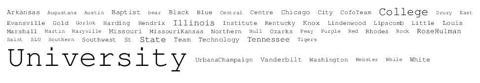
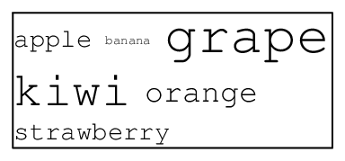
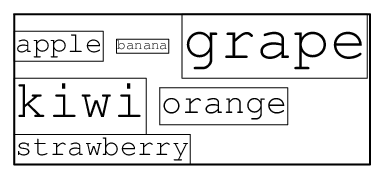

Problem E: Word Cloud
| Source file: |
cloud.{c, cpp, java}
|
| Input file: |
cloud.in |

A word cloud (or tag cloud) is a visual representation of textual
data based on a weighted metric. In the above cloud (which is
based on this year's list of Mid-Central teams), the font size of
each word is based on its number of occurrences in the data set.
Tagg Johnson is a man obsessed with counting words that appear
in online documents. On his computer, he keeps a spreadsheet
of all the sites he visits, along with a list of words that
appear on each site and the number of times such word
appears. Tagg would like to generate word clouds
based on the data he has collected.
Before describing the algorithm Tagg uses for generating clouds, we
digress for a quick lesson in typography. The basic unit of measure is
known as a point (typically abbreviated as pt). A
font's size is described based on the vertical number of points from
one line to the next, including any interline spacing. For example,
with a 12pt font, the vertical space from the top of one character to
the top of a character below it is 12 points. We assume that a
character's height is precisely equal to the font's point size (regardless of whether the character is upper or lower case).
For this problem, we focus on a fixed-width font, such as Courier, in
which each character of the alphabet is also given the same amount of
width. The character width for such a font depends on the font
size and the aspect ratio. For Courier, a word with
t characters rendered in a font of size P has a total width of
$\left\lceil \frac{9}{16} \cdot t \cdot P \right\rceil$
when measured in points. Note well the use of the ceiling operator,
which converts any noninteger to the next highest integer. For
example, a 5-letter word in a 20pt font would be rendered with a
height of 20 points and a width
equal to $\left\lceil \frac{900}{16} \right\rceil = \left\lceil
56.25 \right\rceil = 57$ points.
Now we can describe Tagg's algorithm for creating a word cloud. He
pre-sorts his word list into alphabetical order and removes
words that do not occur at least five times. For each word w, he
computes a point size based on the formula
$P = 8 + \left\lceil \frac{40(c_w - 4)}{(c_{max}-4)} \right\rceil$,
where
$c_w$ is the number of occurrences of the word, and
$c_{max}$ is the number of occurrences
of the most frequent word in the data set. Note that by this
formula, every word will be rendered with anywhere from a 9pt font to
a 48pt font. He then places the words in rows, with a 10pt horizontal
space between adjacent words, placing as many words as fit in
the row, subject to a maximum width W for his entire
cloud. The height of a given row is equal to the maximum font
size of any word rendered in that row.
As a tangible example, consider the following data set and word cloud.
| word | count |
|
 |
 |
| apple | 10 |
| banana | 5 |
| grape | 20 |
| kiwi | 18 |
| orange | 12 |
| strawberry | 10 |
|
|
|
|
|
In this example, apple is rendered with 23pt font using
width 65pt, banana is rendered with 11pt font using
width 38pt, and grape is rendered with 48pt font and
width 135pt. If the overall word cloud is constrained to have
width at most 260, those three words fit in a row and the overall
height of that row is 48pt (due to grape). On the second row
kiwi is rendered with height 43pt and width 97pt, and
orange is rendered with height 28pt and width 95pt. A third
row has strawberry with height 23pt and width 130pt. The
overall height of this word cloud is 114pt.
Input:
Each data set begins with a line containing two integers:
W and N. The value W denotes the maximum
width of the cloud; W ≤ 5000 will be at least
as wide as any word at its desired font size. The value
1 ≤ N ≤ 100 denotes the
number of words that appear in the cloud. Following the first line
are N additional lines, each having a
string S that is the word (with no whitespace), and an integer C that is a
count of the number of occurrences of that word in the original data
set, with 5 ≤ C ≤ 1000.
Words will be given in the same order that they are to be
displayed within the cloud.
Output: For each data set, output the word CLOUD
followed by a space, a serial number indicating the data set, a colon, another space, and
the integer height of the cloud, measured in font points.
| Example Input: |
Example Output: |
260 6
apple 10
banana 5
grape 20
kiwi 18
orange 12
strawberry 10
250 6
apple 10
banana 5
grape 20
kiwi 18
orange 12
strawberry 10
610 6
apple 10
banana 5
grape 20
kiwi 18
orange 12
strawberry 10
0 0
|
CLOUD 1: 114
CLOUD 2: 99
CLOUD 3: 48
|
ACM Mid-Central Programming Competition 2014